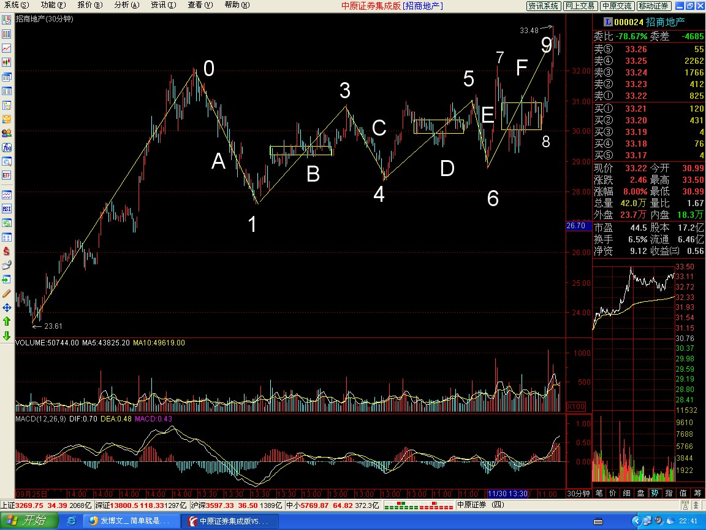
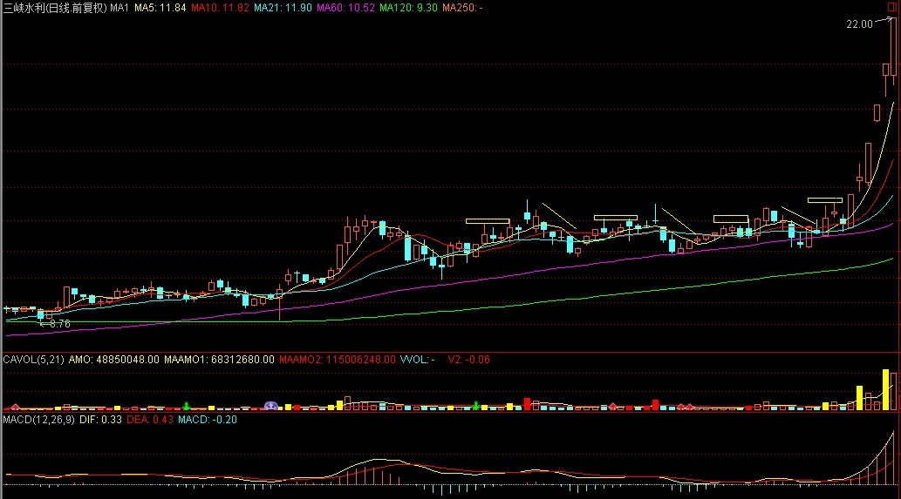
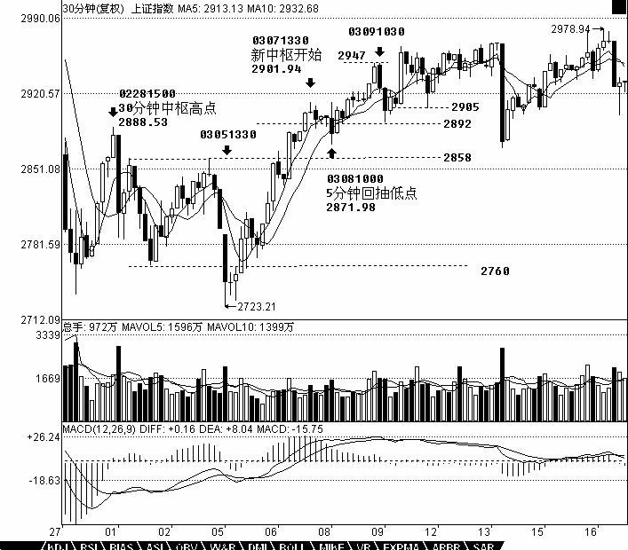
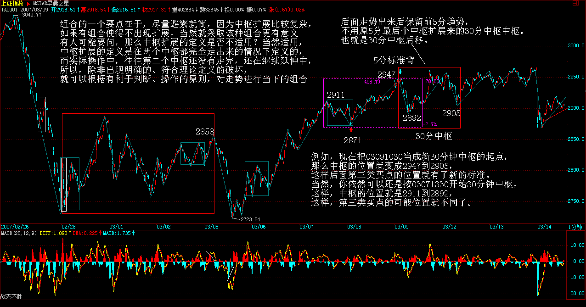
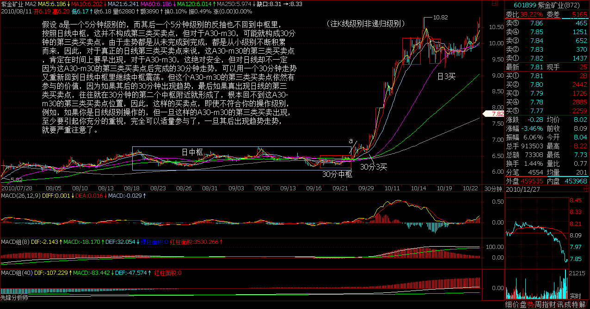
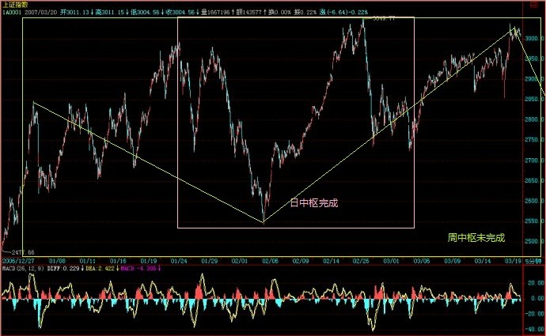
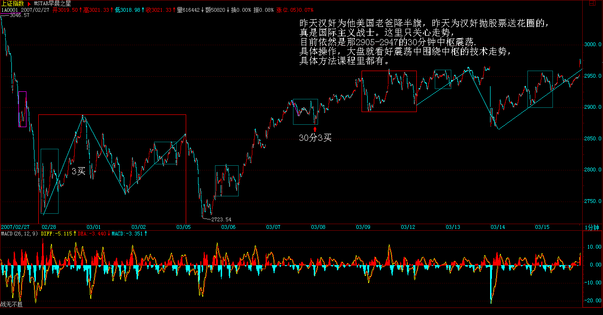
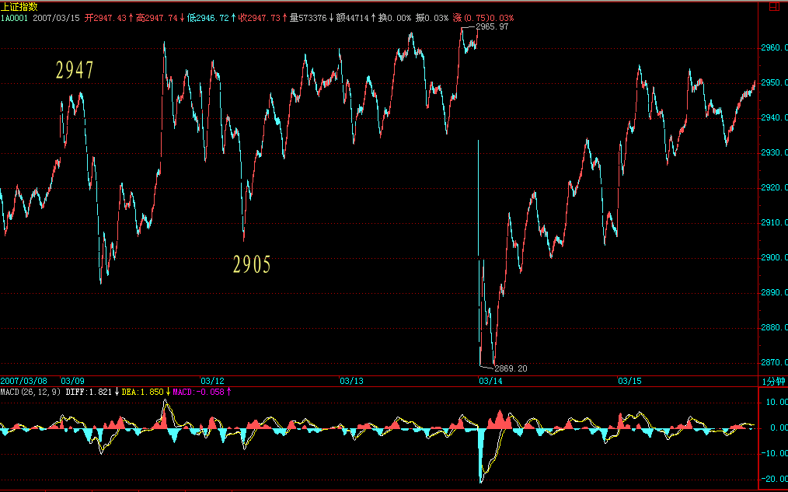
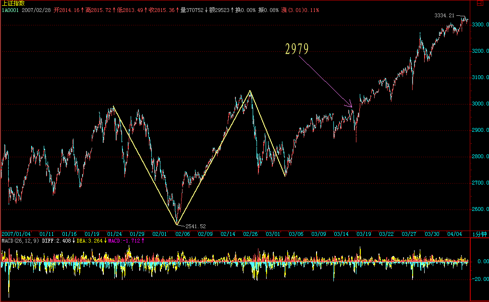

|
 |
教你炒股票36：走势类型连接结合性的简单运用
（2007-03-13 09:00:49) 上堂课提到走势类型连接运算的结合性，也就是走势类型的连接符合结合律，即A+B+C=（A+B）+C=A+（B+C），A、B、C的走势类型级别可以不同。因此，站在多义性的角度，根据该结合律，就不难知道，任何一段走势，都可以有很多不同的释义。必须注意，多义性不是含糊性，一个含糊的理论，其分类、概念等呈现的含糊性，只是证明该理论基础的含糊。而多义性，是站在一个严格、精确的理论基础上，用同一理论的不同视角对同一现象进行分析。
一个最简单的释义角度，就是级别，任何一段走势，都可以根据不同的级别进行分解，不妨用An-m的形式表示根据n级别对A段进行分解的第m段，就有， A=A1-1+A1-2+A1-3+…+A1-m1=A5-1+A5-2+A5-3+…+A5-m5=A30-1+A30-2+A30-3+…+A30-m30= A日-1+A日-2+A日-3+…+A日-m日等等，显然这些分解都符合本ID理论。而根据某级别进行操作，站在纯理论的角度，无非等价于选择该等式列中某个子式子进行操作，这在上一课中已经有具体说明。
还有一种应用，就是关于走势的当下判断。当下判断，其基础在于采取的分解方式。例如，一个按5分钟分解的操作角度与一个按30分钟分解的操作角度，在同一时间看到的走势意义是不同的。更重要的是，在5分钟分解中完成的走势，在30分钟却不一定完成。例如A+B，A、B都是5分钟的走势类型，那么A+B走势，对于30分钟的分解就是未完成的。根据走势必须完美的原则，未完成的走势必完成，也就是，在不同的分解角度，可以在当下看到不同级别的未完成走势根据走势必完美原则产生的运动，这方面的仔细分析留待专门的课程。
有一种应用，就是把还走势重新组合，使得走势更加清晰。很多人一看走势就晕，最主要是不了解走势连接的结合性，任何的走势，在结合律上，都可以重新组合，使得走势显示明显的规律性。假设A+B+C+D+E+F，A、C、E是5分钟级别的，B、D、F是30分钟级别的，其中还有延伸等复杂情况。这时候，就可以把这些走势按5分钟级别重新分解，然后按中枢的定义重新组合走势，按结合律的方法，把原来的分解变成A`+B`+C`+D`+E`+F`，使得A`、B`、C`、D`、E`都是标准的只是30分钟级别，而最后的F`变成在30分钟意义上未完成的走势，这样进行分析，就会很明晰了。当然，具体的组合有很多可能，如何根据当下的走势选择一种最有利指导操作的，就是考功夫的事情。


而这种根据结合律的最佳组合，是根据市场当下的走势随时变化的，而所有的变化，都符合理论要求且不会影响实际操作，是对实际操作起着更有力的帮助。例如，在最近走势中，30分钟图上，2760到2858这30分钟中枢，03081000的5分钟回抽确认了一个第三类买点，然后其后就继续走出一个新的30分钟中枢，而03081000的5分钟回抽低点2871点，比上一中枢的最高点2888点要低，而后来关于03071330开始的这个30分钟中枢出现延伸，这样，我们就可以对这个分解进行重新组合，给出一个更清晰的组合方法，把03081000的5分钟回抽组合到03051330开始的这段5分钟走势中，形成一个5分钟的上涨，然后新的30分钟中枢就从03091030，这样的好处在于，这个中枢震荡的低点2892点比2888点高，如果其后的震荡不出现跌破2888的走势，那么就是一个30分钟的上涨走势形成了。但在这个新的中枢被一个新的第三类买点有效突破前，依然存在震荡跌破2888点甚至最终确认中枢扩展。但这样的重新组合，对看图就有了帮助。当然，站在纯中枢的角度，依然可以坚持让新中枢从03071330开始，这样对具体的操作也没有太大影响，但在判断上就没有重新组合的看起来方便了。

注意，这种重新组合，不涉及任何预测性，有人可能要问，那么为什么不一开始就把03081000的5分钟回抽组合到03051330开始的这段5分钟走势中？因为这种组合不利于操作，站在这种组合下，030810005分钟回抽的第三类买点意义并没有被揭示，是仅仅被局限在一个小的5分钟走势范围内，按照这种组合，就会很恐慌地等待背驰，之所以这样，是因为对走势的理解不够深刻，看不到不同组合反映的意义。而任何组合的反映都是有意义的，对这些组合意义的全面把握，就是一个工夫上的长进了。此外，组合的一个要点在于，尽量避繁就简，因为中枢扩展比较复杂，如果有组合使得不出现扩展，当然就采取该种组合更有意义。有人可能要问，那么中枢扩展的定义是否不适用？当然适用，中枢扩展的定义是在两个中枢都完全走出来的情况下定义的，而实际操作中，往往第二个中枢还没有走完，还在继续延伸中，所以，除非出现明确的、符合理论定义的破坏，就可以根据有利于判断、操作的原则，对走势进行当下的组合(注：注意中枢出现3买卖点的扩展成功标志性意义）。但必须强调的是，当下采取什么组合，就要按该种组合的具体图形意义来判断、操作，例如，现在把03091030当成新30分钟中枢的起点，那么中枢的位置就变成2947到2905(娇注：因为精确线段定义在后期给出，此处这个中枢划分非合理划分），这样后面第三类买点的位置就有了新的标准。当然，你依然可以还是按03071330开始30分钟中枢，这样，中枢的位置就是2911到2892，这样，第三类买点的可能位置就不同了。
还有一种更重要的应用，就是在中枢的震荡中。围绕中枢的震荡，不一定都是次级别的，例如，一个日线中枢，围绕他的震荡，完全可以是30分钟以下的任意级别，甚至是一个跳空缺口，例如有些股票，完全可以今天一字涨停，明天一字跌停，跳来跳去的。一般这种走势，一般人看着就晕了。但如果明白走势连接的结合性，就知道，无论怎么跳，最终都要形成更大级别的，只要不脱离这日线中枢，最后都至少会形成30分钟级别的走势。任何围绕日线级别的震荡，最终都必然可以按如下方式进行分解：A30-1+A30-2+A30-3+…+A30-m30+a，a是未完成的30分钟走势类型，至少a依然围绕日线中枢继续震荡，那a一定最终会完成30分钟的走势类型。显然，这里，m30<9，否则就会变成周的中枢了，这样整个的分解就要按日线来，而道理是一样的。
不过，更有实际意义的是，上面的a如果不再围绕日线震荡（注：跳出中枢），例如，假设 a是一个5分钟级别的，而其后一个5分钟级别的反抽也不回到中枢里，按照日线中枢，这并不构成第三类买卖点，但对于A30-m30，可能就构成30分钟的第三类买卖点。由于走势都是从未完成到完成，都是从小级别不断积累而来，因此，对于真正的日线第三类买卖点来说，这A30-m30的第三类买卖点，肯定在时间上要早出现，对于A30-m30，这绝对安全，但对日线却不一定，因为这A30-m30的第三类买卖点后完成的30分钟走势，可以用一个30分钟走势又重新回到日线中枢里继续中枢震荡。但这个A30-m30的第三类买卖点依然有参与的价值，因为如果其后的30分钟出现趋势，最后如果真出现日线的第三类买卖点，往往就在30分钟的第二个中枢附近就形成了，根本回不到这A30-m30的第三类买卖点位置，因此，这样的买卖点，即使不符合你的操作级别，例如，如果你是日线级别操作的，但一旦这样的A30-m30的第三类买卖出现，至少要引起你充分的重视，完全可以适量参与了，一旦其后出现趋势走势，就要严重注意了。
不应该对走势进行任何的预测，但所有已走出来的走势，却可以根据级别与结合律等随意组合，无论任何组合，在该组合下，都必然符合本ID的理论，而任何最终的走势，都在所有组合中完全符合本ID的理论，这也是本ID理论的神奇之处，无论你怎么组合，都不会出现违反本ID理论的情况。但能否找到最合适的组合以适应操作，以及根据不同的组合，对走势进行综合分析，这就和经验有关了。这些最适合的分解，都是有相应答案的，关键是你能否看出来，而这根本不涉及任何的预测，只是对已有走势的分解，与对理论的把握与图形的熟悉度相关。而这些都是一些最基本的工夫，但必须在当下的走势中不断磨练才能真正掌握。如果真能把握这些最基本的当下走势的最合理组合以及用不同组合进行综合分析，那就可以开始继续读初三了。
每日解盘(2007-03-13、14 08:58:13)关于大盘个股说几句闲话
(2007-03-14 08:58:13) 忙，昨天收盘没发帖，今早补几句。目前大盘中线就是一个日、周中枢的问题，刀没两头利，如果这里是日中枢，现在就直接上去，那么就进入背驰段；如果在这里继续震荡弄周中枢出来，其后可预期的上涨幅度就更可观一点。不过无论是什么中枢，大盘牛市第一波远没结束。
每日解盘(2007-03-15 15:23:22 )
缠中说禅： 汉奸认了这么多干爸，实力还是有点的，否则早就突破3000点一飞冲天。在这里不断震荡，就是要消耗汉奸的实力，壮大自己。汉奸现在的地盘也就剩下大盘金融等少数几个了，今年来这轮三线股的独立牛市行情，基本与汉奸无关，像昨天说的小盘股，也基本没汉奸什么事。汉奸有本事就压着金融股送终吧，指数不涨，一样天天大牛市，等哪天，工行中行有几乎变成最便宜的股票，本ID倒要看看汉奸还怎么压着。
  缠中说禅： 2007-03-14 15:25:28 基本面上，加息只有心理影响，一旦兑现就没问题了，比较大压力的是外汇投资公司中的一些问题，但依然在最多是周线中枢的承受范围内。
缠中说禅： 2007-03-14 15:30:18 [匿名] 白玉兰 缠中说禅： 2007-03-14 15:31:54 [匿名] guess
缠中说禅： 2007-03-14 15:35:11 [匿名] 白玉兰
缠中说禅： 2007-03-14 15:39:57 [匿名] ED男猿
缠中说禅： 2007-03-14 15:42:19 [匿名] 风云
（改： 就把开盘前算跳空缺口上涨，和有缺口的情况是一样的） 缠中说禅： 2007-03-14 15:44:39 [匿名] 小鸟 缠中说禅： 2007-03-14 15:49:51 bird 缠中说禅： 2007-03-14 15:56:23 匿名] 大盘 珍隐： 2009-09-24 23:19:47 袖珍中小板的，值得中线关注。无非两种走势，一种是在开盘附近震荡出一个中枢后向上，一个是向下，向下的其实更有潜力，向下无非就两波，一旦出现日线背驰，就是中线大牛股。看看以前中小板中的走势就明白。向上突破的，可以在中枢震荡低点介入，来回弄短差直到出现第三类买点后就可以长抓一下，中小板一旦出现开盘后中枢的第三类买点，其后都有可观升幅。不明白的，把前面一些已经走出来的研究一下，对新股如何把握就有一个大概了 大盘2007-03-15 22:14:15 [举报] 匿名] 摄影
大盘 2007-03-20 10:07:27 [举报] 由于目前的上证指数已经突破3000点，也就是突破了上周的2978高点，因此从走势组合来看，似乎完全可以说周线中枢并没有最终形成，因为如果看作周线中枢，似乎日线的下走势没有走完，因此站在60分钟角度来看，1.24-3.5日形成日线中枢，目前是60分钟的上走势，因此今天15分钟回试低点不跌破2979就可构成60分钟3买(娇注：大盘说的不对），如果上去后60分钟或者30回试不跌破1.24日高点2922.66，就构成日线3买，当然不能有效突破3050，反复盘整成周线中枢仍然有可能。
 博主不在，大家有时间讨论讨论目前这个调整大中枢的具体情况 |
|
|
|